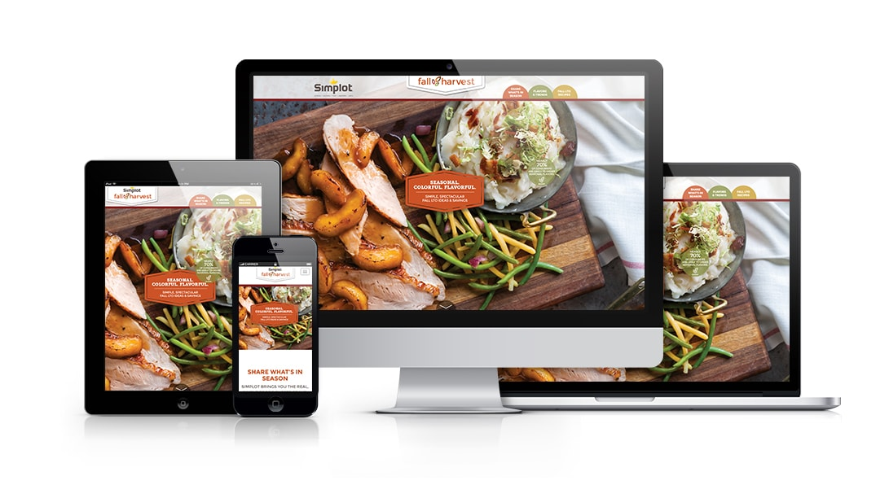

The Fall Harvest site project started as a Photoshop file from a third party. The initial design had all of the content above the fold with links to the videos, recipes, and marketing materials. Concerned the design would be hard to implement for mobile and believing the content would be more effective with a one-page layout, I created a rough one-page prototype to present to the business who agreed that it was a better direction.
The design above is a combination of my prototype and the agency's revisions to fit the new layout.